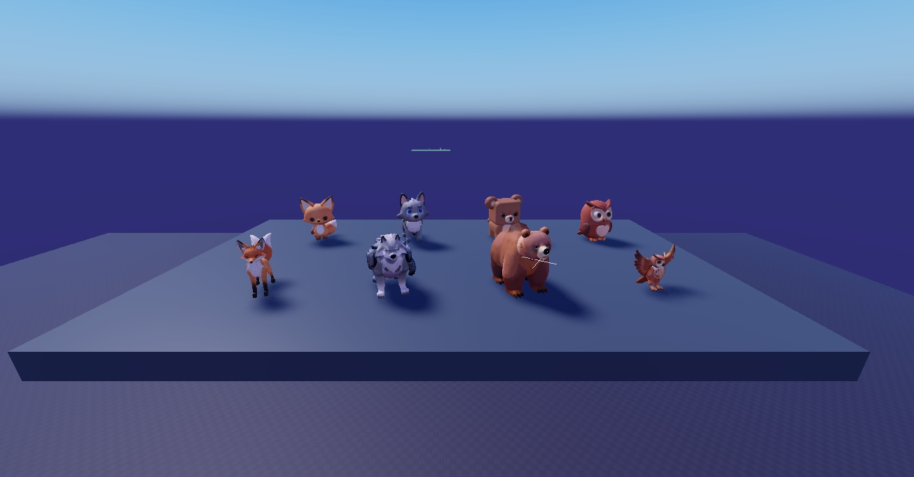
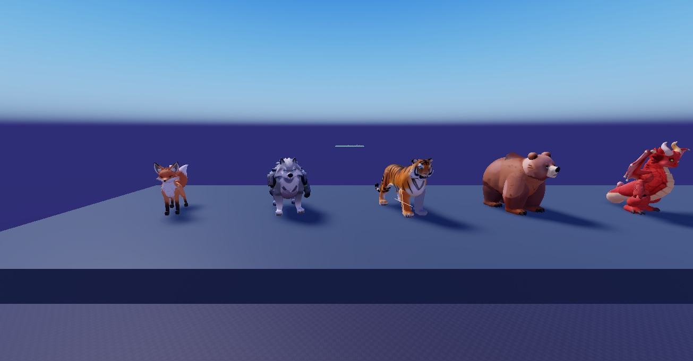
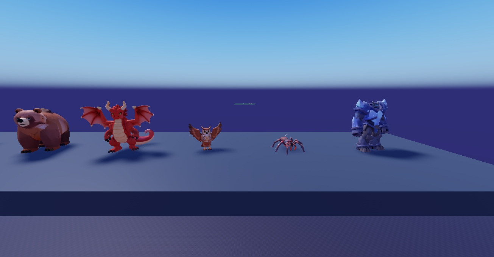

Refonte des créatures : style moins « bébé »
Lot test de 8 créatures générées dans Studio avec un nouveau style : proportions naturelles, tête de taille normale, regard perçant, posture assurée, fourrure / écailles détaillées, style fantasy épique. Plus de chibi, plus de grosses têtes ni de grands yeux brillants.

Avant / après : au fond, l'ancien style (chibi) ; devant, le nouveau. De gauche à droite : renard, loup, ours, hibou.
Le lot test complet

Renard · Loup · Tigre · Ours · Dragon

Ours · Dragon · Hibou · Araignée · Golem de cristal
Ce qui change dans la demande au générateur
Avant
« Cute stylized pet… chibi proportions with a big head and large glossy expressive eyes, soft rounded chunky shapes »
Maintenant
« Stylized creature for a fantasy adventure game… natural athletic proportions, normal-sized head, sharp focused eyes, confident stance, detailed fur/scales, epic fantasy style, not cute, not chibi »
Les descriptions sont aussi durcies : « bébé dragon » → jeune dragon féroce aux écailles en armure ; « ours dodu » → grizzly massif balafré ; araignée rose → araignée menaçante aux yeux rouges, etc. Les créatures « douces » (lapin, poussin, papillon…) resteront jolies mais réalistes, sans effet peluche.
Ensuite (après ton OK)
- Les 100 espèces + les 9 boss régénérés dans ce style (même découpage tête / corps / pattes / ailes / queue, donc les animations restent).
- Les œufs-gemmes à facettes refaits avec les détails de ces nouvelles créatures (cornes, crocs, écailles…) au lieu des détails « mignons ».
- Mouvements : démarche, battements d'ailes et queue réglés sur des silhouettes plus longues (pas plus lourds, plus félins).
- Captures en jeu de tout le lot dans un croquis final.
L'ancienne version reste en place tant que tu n'as pas validé (rien n'est remplacé dans le jeu).